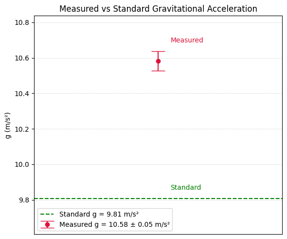

Problem 1
Measuring Earth's Gravitational Acceleration with a Pendulum
Motivation
The acceleration due to gravity, denoted as \(g\), is a fundamental physical constant. One classical method to estimate \(g\) is by analyzing the period of a simple pendulum. This experiment emphasizes proper measurement and uncertainty analysis.
Materials
- String length: approx. 1–1.5 m
- Small weight (e.g., phone charger block)
- Stopwatch or smartphone timer
- Ruler or tape measure (resolution: 1 cm)
Setup
- Measured pendulum length:
$$ L = 1.53 \, \text{m} \quad \pm \quad \Delta L = 0.005 \, \text{m} $$
(Uncertainty: half the smallest unit of your ruler)
Data Collection
| Trial | Time for 10 Oscillations \(t_{10}\) (s) |
|---|---|
| 1 | 23.90 |
| 2 | 23.80 |
| 3 | 23.70 |
| 4 | 23.77 |
| 5 | 24.01 |
| 6 | 24.04 |
| 7 | 23.70 |
| 8 | 24.07 |
| 9 | 24.09 |
| 10 | 23.83 |
-
Mean time:
$$ \overline{t_{10}} = 23.891 \, \text{s} $$ -
Standard deviation:
$$ s = 0.157 \, \text{s} $$ -
Uncertainty in mean time:
$$ \Delta \overline{t_{10}} = \frac{0.157}{\sqrt{10}} = 0.050 \, \text{s} $$
Calculations
-
Period of pendulum:
$$ T = \frac{\overline{t_{10}}}{10} = \frac{23.891}{10} = 2.389 \, \text{s} $$ -
Gravitational acceleration:
$$ g = \frac{4\pi^2 \cdot 1.53}{(2.389)^2} = 10.60 \, \text{m/s}^2 $$
Uncertainty Propagation
-
Uncertainty in \(T\):
$$ \Delta T = \frac{\Delta \overline{t_{10}}}{10} = \frac{0.050}{10} = 0.005 \, \text{s} $$ -
Relative uncertainty:
$$ \frac{\Delta g}{g} = \sqrt{ \left( \frac{0.005}{1.53} \right)^2 + \left( 2 \cdot \frac{0.005}{2.389} \right)^2 } = 0.00428 $$ -
Then:
$$ \Delta g = 10.60 \cdot 0.00428 = 0.045 \, \text{m/s}^2 $$ -
Final result:
$$ g = 10.60 \pm 0.05 \, \text{m/s}^2 $$
Code and Plot

import numpy as np
import matplotlib.pyplot as plt
# --- Data ---
t10_values = np.array([23.90, 23.80, 23.70, 23.77, 24.01, 24.04, 23.70, 24.07, 24.09, 23.83])
L = 1.53 # Length of the pendulum in meters
delta_L = 0.005 # Uncertainty in length (assumed to be 0.5 cm)
n = len(t10_values) # Number of trials
# --- Calculations ---
# Mean time for 10 oscillations
mean_t10 = np.mean(t10_values)
# Standard deviation and uncertainty in mean time
std_t10 = np.std(t10_values, ddof=1)
uncertainty_t10 = std_t10 / np.sqrt(n)
# Period and its uncertainty
T = mean_t10 / 10
delta_T = uncertainty_t10 / 10
# Gravitational acceleration
g = (4 * np.pi**2 * L) / T**2
# Uncertainty in g using propagation of errors
relative_uncertainty_g = np.sqrt((delta_L / L)**2 + (2 * delta_T / T)**2)
delta_g = g * relative_uncertainty_g
# Standard gravitational acceleration value
g_standard = 9.80665
# --- Print results ---
print(f"Measured g = {g:.2f} ± {delta_g:.2f} m/s²")
# --- Plot: Measured g vs Standard g ---
plt.figure(figsize=(6, 5))
# Dynamic y-limits for clarity
y_min = min(g - delta_g, g_standard) - 0.2
y_max = max(g + delta_g, g_standard) + 0.2
# Plot measured g with error bars
plt.errorbar(1, g, yerr=delta_g, fmt='o', capsize=10, color='crimson',
label=f'Measured g = {g:.2f} ± {delta_g:.2f} m/s²')
# Plot standard g
plt.hlines(g_standard, 0.5, 1.5, colors='green', linestyles='--',
label=f'Standard g = {g_standard:.2f} m/s²')
# Annotate points
plt.text(1.05, g + delta_g + 0.05, "Measured", color='crimson')
plt.text(1.05, g_standard + 0.05, "Standard", color='green')
# Format axes
plt.xticks([])
plt.xlim(0.5, 1.5)
plt.ylim(y_min, y_max)
plt.ylabel('g (m/s²)')
plt.title('Measured vs Standard Gravitational Acceleration')
plt.grid(True, linestyle=':', alpha=0.7)
plt.legend()
plt.tight_layout()
# Show the plot
plt.show()
Analysis
- Comparison with standard value:
- Standard \(g = 9.80665 \, \text{m/s}^2\)
-
Difference: \(\Delta = 10.60 - 9.81 = 0.79 \, \text{m/s}^2\)
-
Discussion:
- Measurement resolution introduces small uncertainty, but most error likely from timing reaction.
- Repeated measurements reduced random error.
- Assumes small-angle approximation and ideal point mass, which may not fully apply.